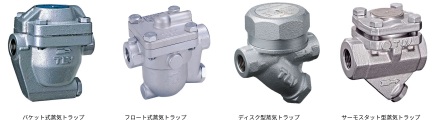

2026年
問題77 空気調和設備の配管・ポンプに関する次の語句の組合せとして，最も不適当なものはどれか．
(1)伸縮継手 温度変化による配管応力の吸収
(2)キャビテーション 吐出量の低下，揚水不能
(3)水撃作用 有効吸込みヘッド（NPSH）
(4)配管系の抵抗曲線 全揚程
(5)蒸気トラップ 凝縮水の分離
2026年
問題77 正解（3） 頻出度AAA
有効吸込みヘッド(NPSH※)は，選択肢-(2) のキャビテーションに関する用語である．
※ NPSH：Net Positive Suction Head
キャビテーション（cavitation：空洞現象とも言われる．）は液流体に特有の現象で，ベルヌーイの定理により流体の高速流れによってインペラ(羽根車)表面の静圧が低下し，部分的に流体の飽和蒸気圧力以下になることで液中の微少な気泡やごみを核として液が沸騰し，液の蒸気で満たされた気泡が発生する．この気泡が急激に押しつぶされるときに激しい騒音と振動が発生し，吐出量も低下する．繰り返しの衝撃波によってついにはインペラの金属面に損傷が発生する．
水面よりポンプが高い位置にある場合，理論的には水面から約10m(＝大気圧)まで吸上げ可能であるが，必要NPSHや吸込み配管の抵抗等があって実際には5～6mまでである．水が温水になると，キャビテーションを起こしやすくなるためさらに低くなり，60℃を超えると吸上げ不可能となる．
ポンプの吸込み口において液体が有する圧力(大気圧－ポンプ吸込み口と液面の高さの差)から液温に相当する蒸気圧を差し引いた圧力を液柱で表したものが「有効NPSH(有効吸込みヘッド)」である．ポンプが内部でキャビテーションを起こさないために必要な圧力の余裕を「必要NPSH」という．必要NPSHはポンプの性能の1つで，この値が小さいほど吸込み能力が高い．キャビテーションを防ぐためには有効NPSH＞必要NPSHでなければならない．
ポンプの特性曲線図の例（2026-77-1図）から，必要NPSHはポンプの送水量が大きい範囲で大きくなることが分かる．吐出しバルブを絞って送水量を減らせば，キャビテーションの発生を防止できる場合が多い．
2026-77-1図 特性曲線図の例
「水撃作用（ウォーターハンマ）」は，配管内を送水中に，弁が急激に閉じたり，ポンプが急停止した場合の流速の急変化が流体の圧力の変化となって表われ，異常な衝撃圧力と大きな衝撃音とを発生する現象である．場合によっては配管系に大きな損害を与えることがある．
ウォーターハンマの防止には，その発生原因により次のような対策を取る．
1．エアチャンバ，ショックアブソーバ，その他のウォーターハンマ防止器をできるだけ発生箇所の近くに取り付ける．
2．ポンプが急停止しないようにポンプにフライホイールなどを付加して慣性重量を大きくする．
3．ポンプの吐出し側の逆止弁を急開式や自閉式として逆流を阻止する．
4．緩閉式逆止弁を用い逆流の圧力変動を緩和する．
-(4) 「全揚程」と「配管系の抵抗曲線」の交点がポンプの運転点を示す．
ポンプの損失水頭は流速の2乗に比例するのは送風機の圧力損失が風速の2乗に比例するのと同じで，ベルヌーイの定理から導くことができる．損失水頭は流速の2乗に比例し，流量\(Q\)は流速に比例するので，\(H_f=kQ^2\)と書ける（\(k\)は流体等によって決まる比例定数）．
実揚程を\(H_r\)とすると，全揚程は，\(H=H_r+H_f=H_r+kQ^2\)である．この2次曲線\(R=kQ^2\)を抵抗曲線といい，揚程曲線と抵抗曲線の交点はポンプの運転点を示す（2026-77-2図参照）．
2026-77-2図 ポンプの特性曲線と抵抗曲線
出典 公益社団法人 日本建築衛生管理教育センター
「新建築物の環境衛生管理第2版第1刷」中巻234頁 図5-2-1(47)を基に作成
-(5)配管内の凝縮水をそのままにするとスチームハンマの原因となる．
蒸気トラップの例を2026-77-3図に挙げる．
2026-77-3図 蒸気トラップの例

出典 株式会社テイエルブイ
https://www.tlv.com/ja-jp/products/080000 を基に作成
蒸気トラップについては次のサイトが詳しい（YOSHITAKE・スチームトラップの種類 ）．